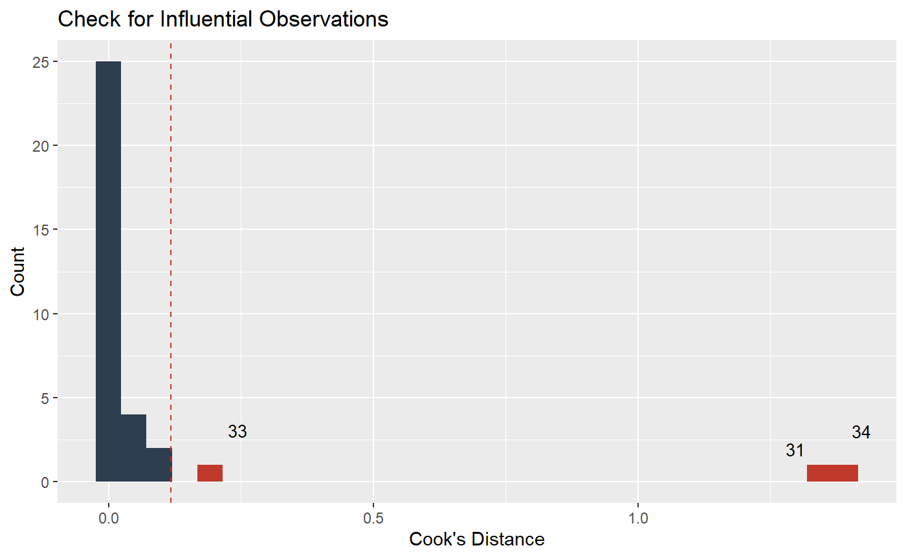

check_outliers.RdChecks for and locates influential observations (i.e., "outliers") via several distance methods.
check_outliers(x, ...) # S3 method for default check_outliers(x, method = c("cook", "mahalanobis", "ics"), threshold = NULL, ...)
| x | A model object. |
|---|---|
| ... | When |
| method | The method to calculate the distance, at which value a point is considered as "outlier". |
| threshold | The threshold indicating at which distance an observation is
considered as outlier. Possible values are |
Check (message) on whether outliers were detected or not, as well as a data frame (with the original data that was used to fit the model), including information on the distance measure and whether or not an observation is considered as outlier.
Performs a distance test to check for influential observations. Those greater as a certain threshold, are considered outliers. This relatively conservative threshold is useful only for detection, rather than justificaiton for automatic observation deletion.
When method = "cook", threshold defaults to 4 divided by numbers of observations.
When method = "mahalanobis", the default for threshold is based on
a weird formula (floor(3 * sqrt(sum(cov(predictors)^2)) / nobs(x))),
which is limted to values between 3 and 10, to account for different variation
in the data depending on the number of observations. There is no "rule of thumb"
for the threshold regarding the Mahalanobis Distance, most studies use a value
between 3 and 10. It is most likely better to define own, sensible thresholds.
If method = "ics", the threshold is determined by ICSOutlier::ics.outlier().
Refer to the help-file of that function to get more details about this procedure.
Note that method = "ics" requires both ICS and ICSOutlier
to be installed, and that it takes a bit longer to compute the results.
Cook, R. D. (1977). Detection of influential observation in linear regression. Technometrics, 19(1), 15-18.
Archimbaud, A., Nordhausen, K., & Ruiz-Gazen, A. (2018). ICS for multivariate outlier detection with application to quality control. Computational Statistics & Data Analysis, 128, 184–199. doi: 10.1016/j.csda.2018.06.011
# select only mpg and disp (continuous) mt1 <- mtcars[, c(1, 3, 4)] # create some fake outliers and attach outliers to main df mt2 <- rbind(mt1, data.frame(mpg = c(37, 40), disp = c(300, 400), hp = c(110, 120))) # fit model with outliers model <- lm(disp ~ mpg + hp, data = mt2) check_outliers(model)#> Warning: 3 outliers detected (cases 31, 33, 34). #>#>#> Warning: Removed 31 rows containing missing values (geom_text_repel).check_outliers(model, method = "m")#> Warning: 2 outliers detected (cases 31, 34). #># NOT RUN { # This one takes some seconds to finish... check_outliers(model, method = "ics") # }